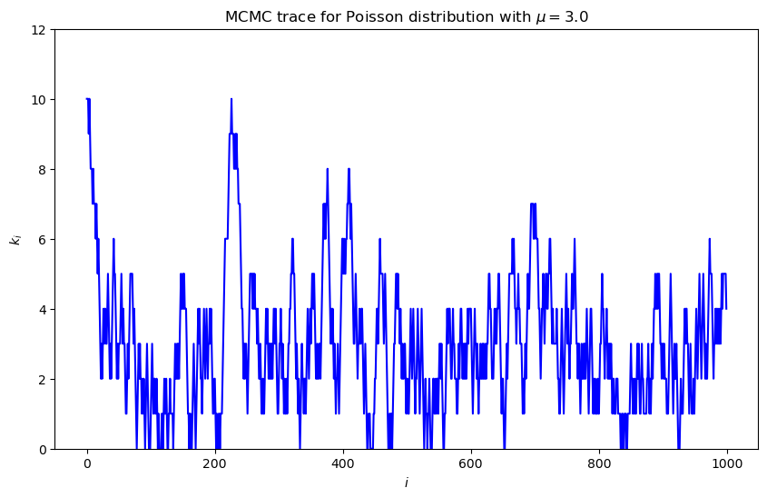
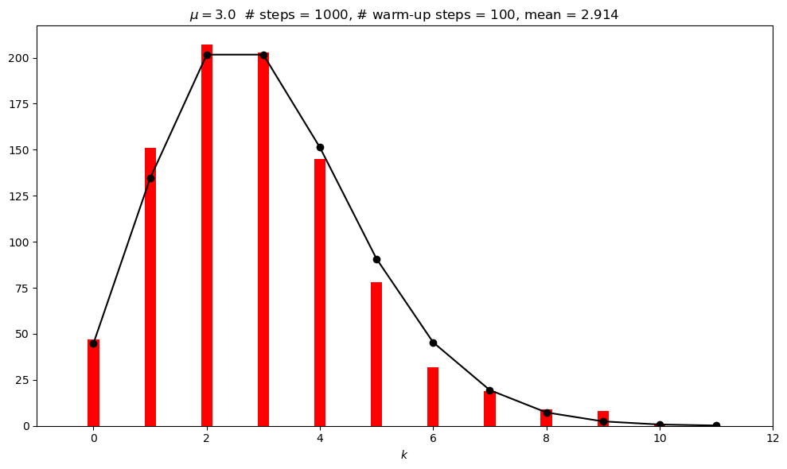
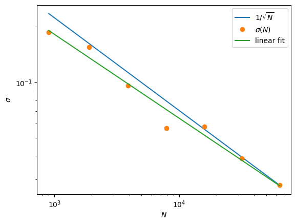
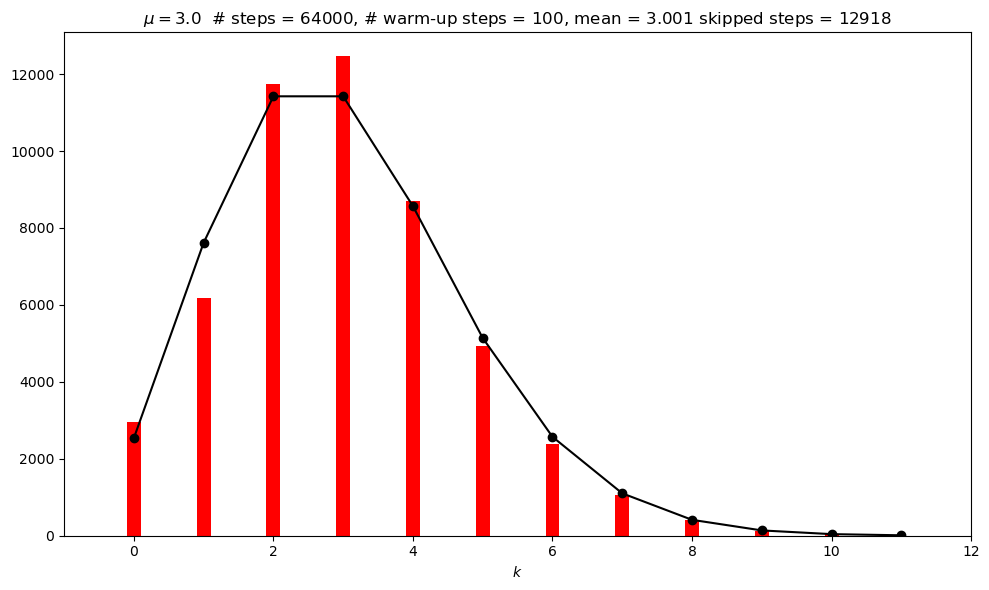

18.4. Demonstration: Metropolis-Hasting MCMC sampling of a Poisson distribution#
This notebook was adapted from Example 1, section 12.2 in Gregory’s Bayesian Logical Data Analysis for the Physical Sciences [Gre05].
The Poisson discrete random variable from scipy.stats is defined by (see documentation)
where \(k\) is an integer and \(\mu\) is called the shape parameter. The mean and variance of this distribution are both equal to \(\mu\). (Note: Gregory uses a different notation, but we’ll stay consistent with scipy.stats.)
By “sampling a Poisson distribution” we mean we will obtain a set of \(k\) values: \(\{k_1, k_2, k_3, \ldots\}\) that follow this distribution. That is, for a particular \(k_i\), the probability to get that value should be what we get by evaluating \(p(k_i|\mu)\). We know we’ve succeeded if we make a histogram of our set of \(k_i\)s and it looks like \(p(k|\mu)\) (scaled to line up or else our histogram needs to be normalized to one).
We’ve already seen sampled the Poisson distribution through a scipy.stats script in the Part I exercise notebook Amplitude of a signal in the presence of background.
Here we will sample it using a method generically called Markov chain Monte Carlo or MCMC. A Markov chain starts with some initial value, and then each successive value is generated from the previous one. But it is not deterministic: when the new value is chosen, there is a random number involved. The particular version of MCMC used here is called Metropolis-Hasting. You may be familiar with this from a statistical mechanics class, where it is typically applied to the Ising model.
We’ll do the Metropolis-Hasting sampling as follows:
Choose an initial \(k\) (call it \(k_0\)), having already fixed \(\mu\).
Given \(k_i\), sample a uniform random number \(x\) from 0 to 1 (so \(x \sim U(0,1)\)) and propose \(k' = k_i + 1\) if the \(x > 0.5\), otherwise propose \(k' = \max(k_i - 1)\) (meaning: step to the left, but don’t go below zero; this is an asymetric proposal!).
Compute the Metropolis ratio \(r = p(k'|\mu)\, /\, p(k_i|\mu)\) using the discrete Poisson distribution.
Given another uniform random number \(y \sim U(0,1)\), \(k_{i+1} = k'\) if \(y \leq r\), else \(k_{i+1} = k_i\) (i.e., keep the same value for the next \(k\)).
Repeat 2.-4. until you think you have enough samples of \(k\).
When graphing the posterior or calculating averages, skip the first values until the sampling has equilibrated (this is generally called the “burn-in” or “warm-up”).
In practice we’ll carry this out by generating all our uniform random numbers at the beginning using scipy.stats.uniform.rvs.
%matplotlib inline
import numpy as np
from math import factorial
# We'll get our uniform distributions from stats, but there are other ways.
import scipy.stats as stats
import matplotlib.pyplot as plt
def poisson(k, mu):
"""
Returns a Poisson distribution value for k with mean mu
"""
return mu**k * np.exp(-mu) / factorial(k)
In the following we have the steps 1-6 defined above marked in the MCMC_poisson function. Step through the implementation and ask questions about what you don’t understand.
def MCMC_poisson(mu, k0, num_steps, warm_up_steps=100):
"""
1. Set mu and k0 by passed variables.
Also pass num_steps, the number of MCMC steps we'll take
"""
# generate the two sets of uniform random numbers we'll need for 2. and 4.
uniform_1 = stats.uniform.rvs(size=num_steps)
uniform_2 = stats.uniform.rvs(size=num_steps)
_k_array = np.zeros(num_steps, dtype=int)
_k_array[0] = k0
# 5. Loop through steps 2-4
for i in range(num_steps-1): # num_steps-1 so k_array[i+1] is always defined
# 2. Propose a step
k_now = _k_array[i]
if uniform_1[i] > 0.5:
kp = k_now + 1 # step to the right
else:
kp = max(0, k_now - 1) # step to the left, but don't go below zero
# 3. Calculate Metropolis ratio
metropolis_r = poisson(kp, mu) / poisson(k_now, mu)
# 4. Accept or reject
if uniform_2[i] <= metropolis_r:
_k_array[i+1] = kp
else:
_k_array[i+1] = k_now
# 6. Choose how many steps to skip (100 by default, but optionally passed)
# Return the full chain, but also the mean and std after the warm-up
return _k_array, np.mean(_k_array[warm_up_steps:]), np.std(_k_array[warm_up_steps:])
Test the MCMC_poisson function#
# test the function
mu = 3.
k0 = 10.
num_steps = 1000 # number of MCMC steps we'll take
warm_up_steps = 100
k_array, mean, sd = MCMC_poisson(mu, k0, num_steps, warm_up_steps)
print(mean, sd)
2.9144444444444444 1.7758917078540266
Trace plot#
MCMC trace: a plot of the value at successive MC steps. Notice the fluctuations; it stays reasonably close to the value of \(\mu\) but still can jump high.
Note the outliers at the beginning: the sampling needs to equilibrate. This is called the warm-up (or “burn-in”) time. What would you estimate for the warm-up time?
Does the trace show that the space is being explored (rather than being confined to one region)?
Predict how the trace to behave for different \(\mu\) and try it.
# Plot the trace
fig = plt.figure(figsize=(10,6))
# Plot the trace (that means k_i for i=0 to num_steps)
ax_trace = fig.add_subplot(1, 1,1)
ax_trace.plot(range(num_steps), k_array, color='blue')
ax_trace.set_ylim(0, 12)
ax_trace.set_xlabel(r'$i$')
ax_trace.set_ylabel(r'$k_i$')
trace_title = rf'MCMC trace for Poisson distribution with $\mu = ${mu:.1f}'
ax_trace.set_title(trace_title);

Histogram#
The histogram shows how well we are doing. Rerun the test multiple times and characterize the fluctuations.
What do you observe about the histogram?
Does the sampled historgram agrees with (scaled) exact Poisson pdf (that is what success looks like)? Is it normalized? Compare 1000 to 100,000 samples.
fig = plt.figure(figsize=(10,6))
# Plot the Poisson distribution
ax_plot = fig.add_subplot(1, 1, 1)
bin_num = 12
n_pts = range(bin_num)
# Scale exact result to the histogram, accounting for warm_up_steps
poisson_pts = [(num_steps - warm_up_steps) * poisson(n, mu) for n in n_pts]
# Plot the exact distribution
ax_plot.plot(n_pts, poisson_pts, marker='o', color='black')
# Histogram k_i beyond the warm-up period
ax_plot.hist(k_array[warm_up_steps:], bins=n_pts,
align='left', rwidth=0.2, color='red')
ax_plot.set_xlim(-1, bin_num)
ax_plot.set_xlabel(r'$k$')
plot_title = rf'$\mu = ${mu:.1f} # steps = {num_steps:d},' \
+ rf' # warm-up steps = {warm_up_steps:d},' \
+ rf' mean = {mean:.3f}'
ax_plot.set_title(plot_title)
fig.tight_layout()

# Check the mean and standard deviations from the samples against exact
print(f' MCMC mean = {np.mean(k_array[warm_up_steps:]):.3f}')
print(f'Exact mean = {stats.poisson.mean(mu=mu):.3f}')
print(f' MCMC sd = {np.std(k_array[warm_up_steps:]):.3f}')
print(f' Exact sd = {stats.poisson.std(mu=mu):.3f}')
MCMC mean = 2.914
Exact mean = 3.000
MCMC sd = 1.776
Exact sd = 1.732
Questions and things to do#
How do you expect the accuracy of the estimate of the mean scales with the number of points? How would you test it?
Record values of the MCMC mean for num_steps = 1000, 4000, and 16000, running each 10-20 times. Explain what you find.
Calculate the mean and standard deviations of the means you found (using np.mean() and np.std()). Explain your results.
Predict what you will find from 10 runs at num_steps = 100,000. What did you actually find?
Try a log-log plot#
num_trials = 20
sd_array = []
steps_array = []
for i in range(0, 7): # range(0, 9) # range(3, 9) # range(0, 7)
mu = 3.
k0 = 10.
num_steps = 1000 * 2**(i) # number of MCMC steps we'll take
warm_up_steps = 100
mean_temp_array = []
for j in range(num_trials):
k_array, mean, sd = MCMC_poisson(mu, k0, num_steps, warm_up_steps)
mean_temp_array.append(mean)
sd_array.append(np.std(mean_temp_array))
steps_array.append(num_steps - warm_up_steps)
for i in range(len(steps_array)):
print(f'{steps_array[i]} {sd_array[i]:.3e}')
print(sd_array)
900 1.860e-01
1900 1.546e-01
3900 9.619e-02
7900 5.662e-02
15900 5.782e-02
31900 3.885e-02
63900 2.787e-02
[0.1859986310184587, 0.15458500203184522, 0.0961851709659081, 0.05661849823381797, 0.057818628397797694, 0.03885012619797283, 0.02786588073613246]
slope, intercept = np.polyfit(np.log(steps_array), np.log(sd_array), 1)
print(f'slope = {slope:.2f}')
slope = -0.45
fig,ax = plt.subplots(1,1)
ax.loglog(steps_array,1/np.sqrt(steps_array)*np.sqrt(steps_array[-1])*sd_array[-1],label=r'$1/\sqrt{N}$')
ax.loglog(steps_array,sd_array,'o',label=r'$\sigma(N)$')
ax.plot(steps_array, np.exp(intercept) * steps_array**slope, label=r'linear fit')
ax.set_xlabel(r'$N$')
ax.set_ylabel(r'$\sigma$')
ax.legend(loc='best');

Repeat with a new incorrect MCMC function#
In MCMC_poisson_no_repeat the current position is not added to the chain (as a repeated entry) if the proposed move is not accepted. Compare the posterior to what is obtained earlier with a large number of steps.
def MCMC_poisson_no_repeat(mu, k0, num_steps, warm_up_steps=100):
"""
1. Set mu and k0 by passed variables.
Also pass num_steps, the number of MCMC steps we'll take
"""
# generate the two sets of uniform random numbers we'll need for 2. and 4.
uniform_1 = stats.uniform.rvs(size=num_steps)
uniform_2 = stats.uniform.rvs(size=num_steps)
_k_array = np.zeros(num_steps, dtype=int)
_k_array[0] = k0
index = 0
skipped = 0
# 5. Loop through steps 2-4
for i in range(num_steps-1): # num_steps-1 so k_array[i+1] is always defined
# 2. Propose a step
k_now = _k_array[index]
if uniform_1[i] > 0.5:
kp = k_now + 1 # step to the right
else:
kp = max(0, k_now - 1) # step to the left, but don't go below zero
# 3. Calculate Metropolis ratio
metropolis_r = poisson(kp, mu) / poisson(k_now, mu)
# 4. Accept or reject
if uniform_2[i] <= metropolis_r:
_k_array[index+1] = kp
index += 1
else:
# _k_array[i+1] = k_now
# index +=1
skipped += 1
pass
# 6. Choose how many steps to skip (100 by default, but optionally passed)
# Return the full chain, but also the mean and std after the warm-up
return _k_array, np.mean(_k_array[warm_up_steps:-skipped]), np.std(_k_array[warm_up_steps:-skipped]), skipped
# test the (incorrect) function (with same parameters as above)
# mu = 3.
# k0 = 10.
#num_steps = 100000 # number of MCMC steps we'll take
#warm_up_steps = 100
k_array_no_repeat, mean_no_repeat, sd_no_repeat, skipped = MCMC_poisson_no_repeat(mu, k0, num_steps, warm_up_steps)
print(mean_no_repeat, sd_no_repeat)
3.0014122631517006 1.6961529894602314
fig = plt.figure(figsize=(10,6))
# Plot the Poisson distribution
ax_plot = fig.add_subplot(1, 1, 1)
bin_num = 12
n_pts = range(bin_num)
# Scale exact result to the histogram, accounting for warm_up_steps
poisson_pts_no_repeat = [(num_steps - warm_up_steps - skipped) * poisson(n, mu) for n in n_pts]
# Plot the exact distribution
ax_plot.plot(n_pts, poisson_pts_no_repeat, marker='o', color='black')
# Histogram k_i beyond the warm-up period
ax_plot.hist(k_array_no_repeat[warm_up_steps:-skipped], bins=n_pts,
align='left', rwidth=0.2, color='red')
ax_plot.set_xlim(-1, bin_num)
ax_plot.set_xlabel(r'$k$')
plot_title = rf'$\mu = ${mu:.1f} # steps = {num_steps:d},' \
+ rf' # warm-up steps = {warm_up_steps:d},' \
+ rf' mean = {mean:.3f}' \
+ f' skipped steps = {skipped:d}'
ax_plot.set_title(plot_title)
fig.tight_layout()

# Check the mean and standard deviations from the samples against exact
print(f' MCMC mean = {np.mean(k_array_no_repeat[warm_up_steps:-skipped]):.3f}')
print(f'Exact mean = {stats.poisson.mean(mu=mu):.3f}')
print(f' MCMC sd = {np.std(k_array_no_repeat[warm_up_steps:-skipped]):.3f}')
print(f' Exact sd = {stats.poisson.std(mu=mu):.3f}')
MCMC mean = 3.001
Exact mean = 3.000
MCMC sd = 1.696
Exact sd = 1.732